에스텍 그룹
업무량 기반 비용 및 인력 산정 프로그램
Workload-Based Cost and Labor Estimation Method
일반 사용자 매뉴얼
컴퓨터를 잘 몰라도 따라 하는 일반 사용자 매뉴얼
v1.28 · 2026년 11월
에스텍베스트 동부지사
차례
1. 이 프로그램은 무엇인가요?
두 가지 방식 중 하나를 고릅니다 · 이런 결과를 얻습니다
2. 프로그램 여는 방법 · 크롬 북마크 · 앱 설치
방법 ① 인터넷 주소로 열기 (가장 쉬움) · 방법 ② 휴대폰에서 QR로 열기 · [다운로드 QR] · 다른 사람에게 알려 주기 · [친구 추천] · 크롬에 북마크하기 (즐겨찾기) · 앱으로 설치하기 (PC 크롬) · 앱으로 설치하기 (휴대폰 크롬) · 설치하면 생기는 앱 아이콘
3. 로그인 · 가입 신청
에스텍 통합 로그인 — 아이디 하나로 여러 프로그램 · 처음 한 번: 가입 신청하기 · 승인 기다리기 · 로그인하기 · 처음 쓰는 기기라면: 새 기기 승인 대기 · "이 프로그램 사용 권한이 없습니다"가 나와요 · 비밀번호가 틀렸다고 나와요 · 비밀번호를 잊었을 때 · 임시 비밀번호로 로그인했을 때 · 휴대폰에서 로그인하기
4. 첫 화면 둘러보기
전체 화면 · 맨 위 머리 부분 (항상 보이는 곳) · 가운데 소개 영상 · 견적 연도와 방식 고르기 · 사업장 유형과 직종 고르기 · 화면 메뉴 (왼쪽/위쪽 메뉴줄) · 야간 테마 화면
5. 처음 한 번만: 내 정보 등록
따라 하기
6. 내 계정 · 여러 기기에서 이어 쓰기
머리 부분의 [내 계정] 카드 · 왼쪽 아래 「메인」 버튼 · 내 계정 메뉴 보기 · 여러 기기에서 이어 쓰기 · [지금 동기화] · 내 정보 수정 · 비밀번호 변경 · "이 기기는 조회 전용입니다"가 보여요 · 로그아웃 · 이런 화면이 나오면 · 사용기한 만료 · 이런 화면이 나오면 · 프로그램 점검 중 · 이런 화면이 나오면 · 이 기기는 사용 제한
7. A 방식 따라 하기 — 새 견적 만들기
1단계 · 견적 사업장 정하기 · 2단계 · 업무 분류표 확인하기 · 화면 아래 결과 띠 보는 법 · 3단계 · 기본규모 넣기 · 4단계 · 업무별 비용 맞춤 · 5단계 · 견적서 만들기 (엑셀 내보내기) · 6단계 · 편성안 · 노무비 비교 · 7단계 · 대분류별 배분 · 8단계 · 산정 기준 (필요할 때만)
8. B 방식 따라 하기 — 받은 견적서 점검하기
B 방식 메뉴 (5단계) · 1단계 · 견적 사업장 (견적서 불러오기) · 2단계 · 기본규모 · 3단계 · 업무 선택 · 4단계 · 업무별 산정 결과 (엑셀 내보내기) · 5단계 · 산정 기준
9. 엑셀 결과 파일 보는 법
표지 · 과부하 표시 (업무별 비용 파일) · 추가 인력 표시 (부족인력 반영 파일) · 산출내역서 · 검토 시트 (업무량 검토 / 추가 인력 검토) · 업무별 비용 배분 · 업무량 산출내역
10. 한 사업장에 여러 직종 견적 (혼합 견적)
따라 하기
11. 자주 묻는 질문 · 문제 해결
12. 꼭 알아 둘 낱말
이 매뉴얼 읽는 법
- [굵은 파란 글씨] — 화면에 있는 버튼이나 메뉴 이름입니다. 그 글자를 찾아 누르면 됩니다.
- ① ② ③ 번호 — 순서대로 따라 하는 단계입니다.
- 💡 알아 두세요 — 알면 편한 팁입니다.
- ⚠ 주의 — 실수하기 쉬운 부분입니다.
1. 이 프로그램은 무엇인가요?
사람 수로 견적을 내던 방식(인당 견적)을 바꿔, 사업장에서 실제로 해야 할 일의 양(업무량)을 시간으로 계산해서 필요한 인원과 비용을 정해 주는 프로그램입니다. 계산이 끝나면 에스텍 견적서 양식 그대로 엑셀 파일을 만들어 줍니다.
두 가지 방식 중 하나를 고릅니다
- A. 업무량 기반 비용 및 인력 산정 — 새 사업장 견적. 업무를 고르고 양을 넣으면 필요한 인원과 견적 금액이 나옵니다.
- B. 견적서 기반 업무별 비용 산정 — 이미 있는 견적서(엑셀)를 불러와, 그 인원으로 업무를 다 할 수 있는지(과부하인지) 확인하고, 모자라는 인원을 계산합니다.
이런 결과를 얻습니다
- 필요한 인원 (예: 남 10명 + 단시간 1명)
- 월 견적 금액과 1인 노무비
- 업무별로 나눈 비용 (어떤 일에 얼마가 드는지)
- 에스텍 양식 엑셀 견적서 (표지 · 견적서 · 산출내역서 · 부대비용 · 업무별 비용 배분 · 업무량 산출내역)
2. 프로그램 여는 방법 · 크롬 북마크 · 앱 설치
프로그램은 인터넷 주소 하나로 엽니다. 처음 한 번 크롬에 북마크하고 앱으로 설치해 두면, 다음부터는 바탕화면 아이콘만 눌러 바로 열 수 있습니다. 새 버전이 나오면 자동으로 바뀝니다.
방법 ① 인터넷 주소로 열기 (가장 쉬움)
- 크롬(Chrome) 인터넷 창을 엽니다.
- 맨 위 주소 칸에 아래 주소를 입력하고 Enter 키를 누릅니다.
- https://sadness500-boop.github.io/Workload-Based-Cost-and-Labor-Estimation-Method/
방법 ② 휴대폰에서 QR로 열기 · [다운로드 QR]
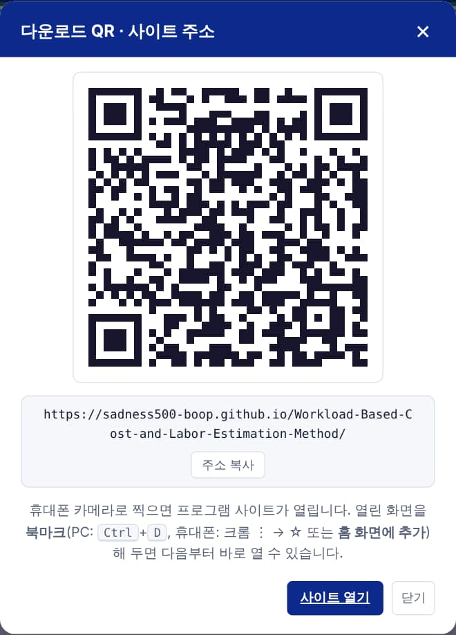
▲ 다운로드 QR 창 — 휴대폰 카메라로 찍으면 프로그램이 열립니다
- 프로그램 맨 위의 [다운로드 QR] 칸을 누르면 큰 QR 코드가 나옵니다.
- 휴대폰 기본 카메라를 켜고 QR 코드를 비추면 주소가 뜹니다. 눌러서 엽니다.
- [주소 복사]를 누르면 사이트 주소가 복사되어 다른 곳에 붙여넣을 수 있습니다.
- [사이트 열기]를 누르면 새 창으로 프로그램이 열립니다.
다른 사람에게 알려 주기 · [친구 추천]
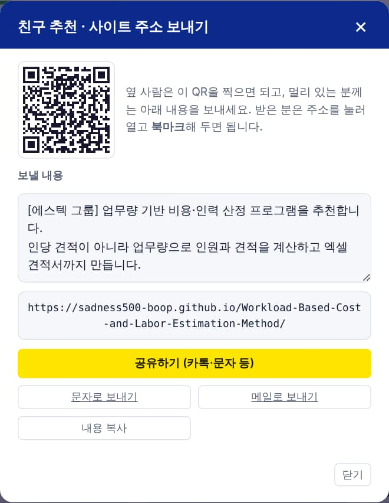
▲ 친구 추천 창 — 사이트 주소를 카톡·문자·메일로 보냅니다
- 프로그램 맨 위의 [친구 추천] 칸을 누릅니다.
- [보낼 내용] 칸에 추천 문구와 사이트 주소가 자동으로 들어갑니다. 필요하면 글을 고칩니다. (내 정보를 등록했으면 보낸 사람 이름도 들어갑니다)
- [공유하기 (카톡·문자 등)]를 누르고 카카오톡이나 문자를 고릅니다. PC에서는 [내용 복사] 후 카톡 PC 창에 붙여넣기(Ctrl + V) 하면 됩니다.
- [문자로 보내기]·[메일로 보내기]를 누르면 문자·메일 앱이 바로 열립니다.
- 받은 사람은 주소를 눌러 열고, 아래처럼 북마크와 앱 설치를 하면 됩니다.
크롬에 북마크하기 (즐겨찾기)
▲ 주소 칸 오른쪽 끝의 ☆(별) 버튼 — 누르면 파란 별(★)로 바뀌며 북마크됩니다
- 프로그램이 열린 크롬 창에서 주소 칸 오른쪽 끝의 [☆](별) 버튼을 누릅니다. 키보드로는 Ctrl + D 를 누르면 됩니다.
- "북마크 추가됨" 창이 나오면 이름을 확인하고(예: 업무량 산정) [폴더]는 [북마크바]로 고른 뒤 [완료]를 누릅니다.
- 별이 파란색(★)으로 바뀌면 끝입니다. 다음부터는 주소 칸 아래 북마크바에서 누르면 바로 열립니다.
- 휴대폰 크롬: 오른쪽 위 ⋮ → [☆]를 누르면 북마크됩니다.
앱으로 설치하기 (PC 크롬)
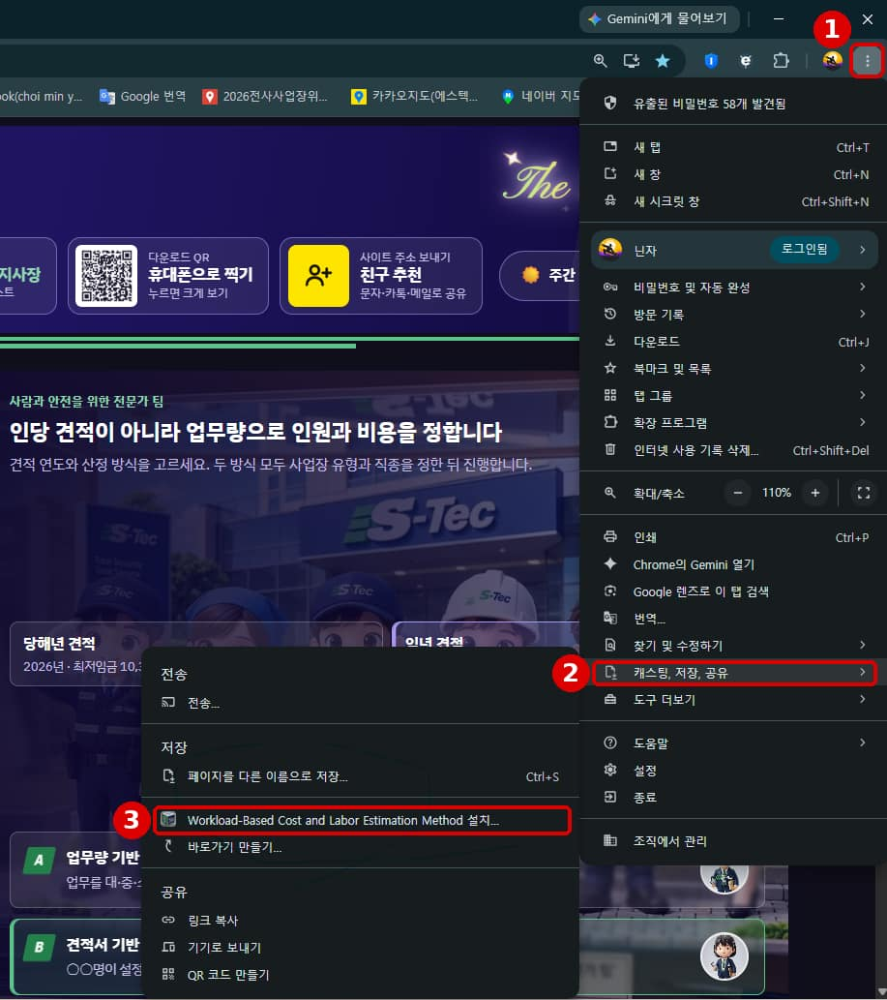
▲ ① ⋮ (더보기) → ② 캐스팅, 저장, 공유 → ③ Workload-Based Cost and Labor Estimation Method 설치…
- 크롬 창 오른쪽 맨 위의 [⋮](점 세 개, 더보기) 버튼을 누릅니다.
- 메뉴 아래쪽의 [캐스팅, 저장, 공유]에 마우스를 올립니다.
- 옆에 나오는 메뉴에서 [Workload-Based Cost and Labor Estimation Method 설치…]를 누릅니다.
- "앱을 설치하시겠습니까?" 창이 나오면 [설치]를 누릅니다.
- 프로그램이 따로 된 창으로 열리고, 바탕화면과 시작 메뉴에 앱 아이콘(아래 그림)이 생깁니다. 다음부터는 이 아이콘을 두 번 누르면 바로 열립니다.
💡 알아 두세요 주소 칸 오른쪽에 [설치] 아이콘(모니터에 ↓ 모양)이 보이면 그것을 눌러도 바로 설치됩니다. 설치한 앱도 새 버전이 나오면 자동으로 바뀝니다. |
앱으로 설치하기 (휴대폰 크롬)
- QR이나 친구 추천으로 받은 주소를 휴대폰 크롬에서 엽니다.
- 오른쪽 위 [⋮]를 누릅니다.
- [홈 화면에 추가] 또는 [앱 설치]를 누르고, 다시 [설치](또는 [추가])를 누릅니다.
- 휴대폰 홈 화면에 앱 아이콘(아래 그림)이 생깁니다. 누르면 앱처럼 화면 가득 열립니다.
⚠ 주의 설치 메뉴가 안 보이면 크롬이 아닌 다른 앱(카톡 안의 인터넷 창 등)에서 연 것입니다. 오른쪽 위 메뉴에서 [다른 브라우저로 열기] → [Chrome]을 고른 뒤 다시 해 보세요. |
설치하면 생기는 앱 아이콘
▲ 업무량 산정기준 용역견적 시스템 — 바탕화면 · 휴대폰 홈 화면 · 프로그램 왼쪽 위에 보이는 아이콘
- PC 바탕화면, 시작 메뉴, 휴대폰 홈 화면에 이 아이콘이 생깁니다.
- 프로그램 화면 왼쪽 위에도 같은 아이콘이 있고, 누르면 처음 화면으로 돌아갑니다.
- 안드로이드 앱(APK)으로 설치해도 같은 아이콘이 보입니다.
3. 로그인 · 가입 신청
이 프로그램은 에스텍 통합 로그인을 씁니다. 근태관리 등 다른 에스텍 프로그램과 같은 아이디 하나로 로그인하고, 한 번 로그인하면 다른 에스텍 프로그램도 함께 열립니다. 아이디가 없으면 처음 한 번 [가입 신청]을 하고, 제작자(관리자)가 승인하면 그때부터 사용할 수 있습니다.
에스텍 통합 로그인 — 아이디 하나로 여러 프로그램
- 근태관리 프로그램 등 다른 에스텍 프로그램 아이디가 이미 있으면 → 가입 신청 없이 그 아이디와 비밀번호로 바로 로그인하세요.
- 같은 컴퓨터(같은 브라우저)에서 한 프로그램에 로그인하면 다른 에스텍 프로그램도 로그인 없이 함께 열립니다.
- 다만 프로그램마다 사용 권한은 따로 받습니다. 권한이 없으면 "이 프로그램 사용 권한이 없습니다" 화면이 나옵니다(아래 참고).
- 아이디가 없으면 → 아래 순서대로 가입 신청부터 하세요.
처음 한 번: 가입 신청하기
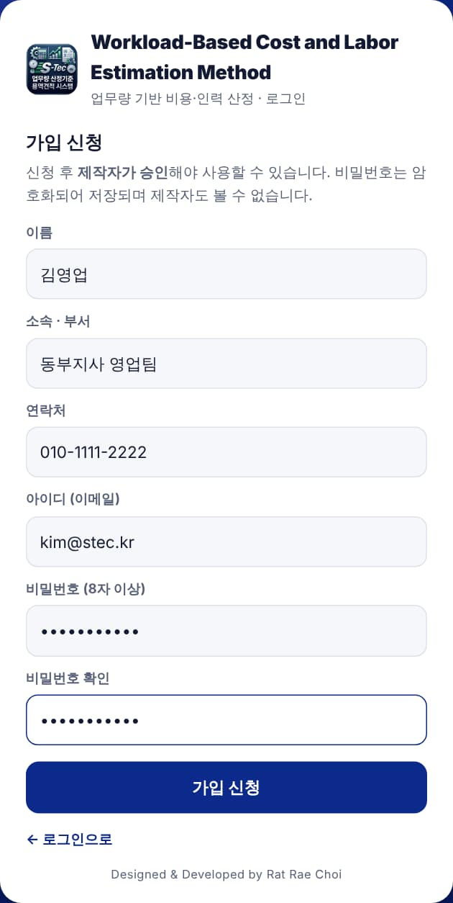
▲ 가입 신청 화면 — 이름·소속·연락처·이메일·비밀번호를 넣습니다
- 로그인 창 아래의 [가입 신청]을 누릅니다.
- 이름, 소속·부서(예: 동부지사 영업팀), 연락처를 적습니다.
- 이메일을 적습니다. 이 이메일이 앞으로 쓸 아이디가 됩니다.
- 비밀번호를 8자 이상으로 정하고, 확인 칸에 한 번 더 똑같이 적습니다.
- [가입 신청]을 누릅니다.
💡 알아 두세요 이메일은 실제로 받아 볼 수 있는 주소로 적으세요. 비밀번호를 잊었을 때 재설정 메일이 이 주소로 갑니다. |
승인 기다리기
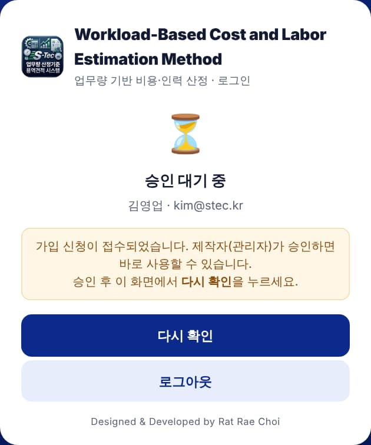
▲ 승인 대기 화면 — 제작자가 승인하면 [다시 확인]을 누릅니다
- 가입 신청 뒤 로그인하면 "승인 대기 중" 화면이 나옵니다. 정상입니다.
- 제작자(관리자)에게 "가입 신청했습니다"라고 카톡이나 전화로 알려 주세요.
- 승인되었다는 연락을 받으면 이 화면의 [다시 확인]을 누릅니다. 바로 프로그램이 열립니다.
로그인하기
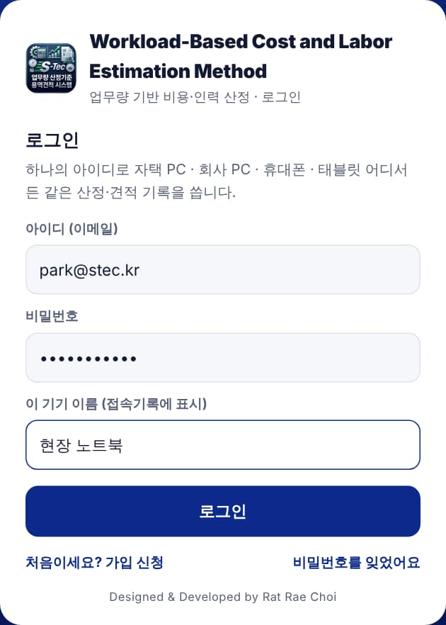
▲ 로그인 화면 — 이메일, 비밀번호, 이 기기 이름
- 이메일(아이디)과 비밀번호를 넣습니다.
- [이 기기 이름] 칸에 지금 쓰는 기기를 알아보기 쉽게 적습니다. (예: 회사 PC, 자택 PC, 휴대폰)
- [로그인]을 누릅니다. 다음부터는 같은 기기에서 자동으로 로그인됩니다.
💡 알아 두세요 로그아웃하지 않으면 다음에 열 때 로그인 창 없이 바로 열립니다. 여러 사람이 같이 쓰는 컴퓨터라면 다 쓰고 나서 꼭 [로그아웃]하세요(6장). |
처음 쓰는 기기라면: 새 기기 승인 대기
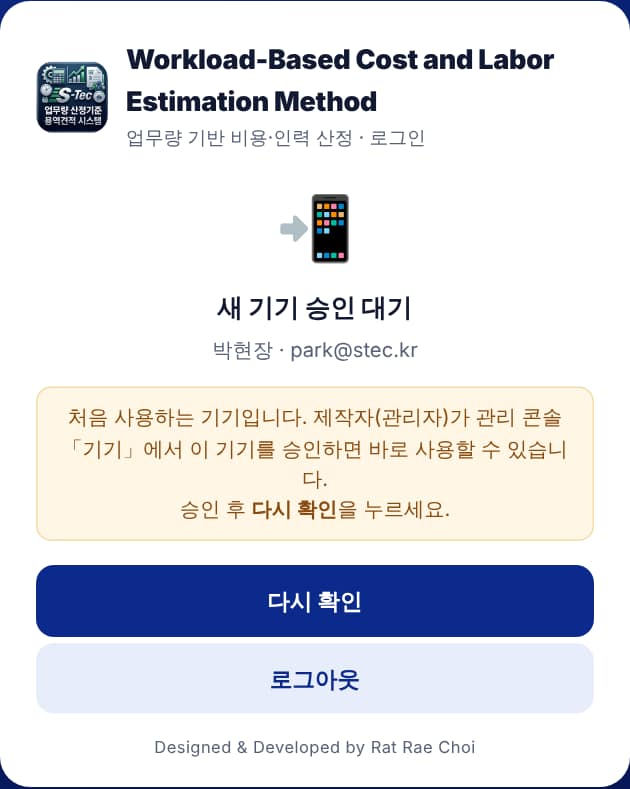
▲ 새 기기 승인 대기 — 제작자가 이 기기를 승인하면 [다시 확인]
- 처음 쓰는 컴퓨터나 휴대폰으로 로그인하면 "새 기기 승인 대기" 화면이 나올 수 있습니다. 정상입니다.
- 제작자(관리자)에게 "새 기기(로그인할 때 적은 기기 이름)로 로그인했습니다"라고 알려 주세요.
- 승인되었다는 연락을 받으면 [다시 확인]을 누릅니다.
💡 알아 두세요 로그인할 때 [이 기기 이름]을 알아보기 쉽게 적어 두면 제작자가 승인할 기기를 금방 찾습니다. |
"이 프로그램 사용 권한이 없습니다"가 나와요
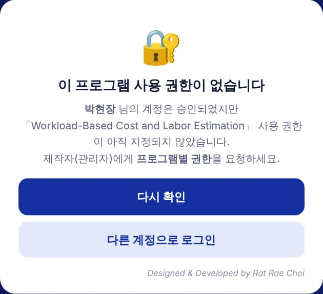
▲ 사용 권한 없음 — 계정은 승인되었지만 이 프로그램 권한이 아직 없음
- 아이디는 승인되었지만 이 프로그램(업무량 산정)을 쓸 권한이 아직 없다는 뜻입니다.
- 제작자(관리자)에게 "업무량 산정 프로그램 권한을 주세요"라고 요청하세요.
- 권한을 받았다는 연락을 받으면 [다시 확인]을 누릅니다.
- "사용기한이 지났습니다"로 나오면 이 프로그램 권한 기한이 끝난 것이니 연장을 요청하세요.
비밀번호가 틀렸다고 나와요
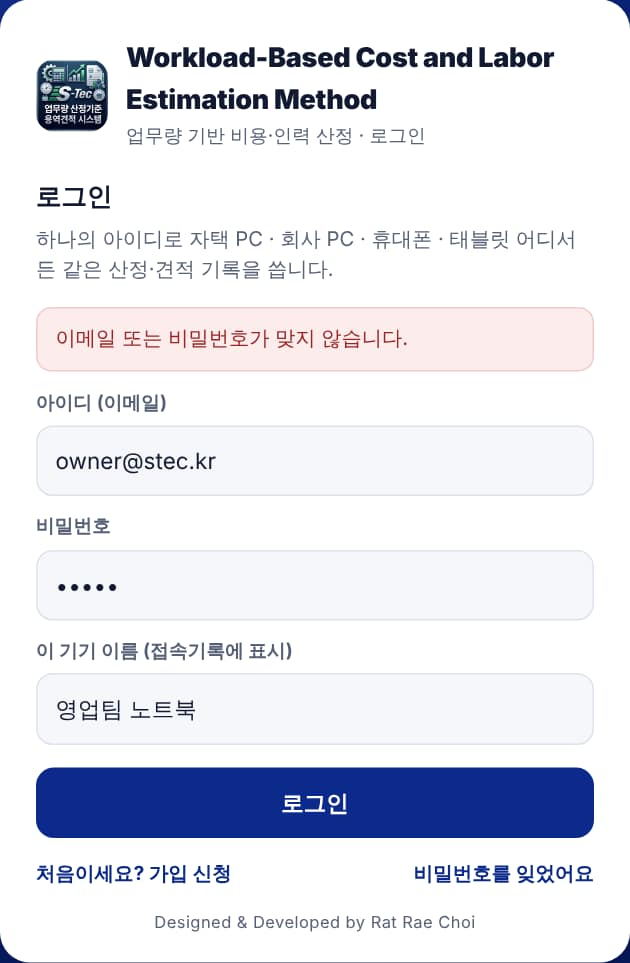
▲ 비밀번호가 틀리면 빨간 안내가 나옵니다
- 한/영 키와 Caps Lock(대문자 고정)이 켜져 있지 않은지 확인하고 다시 넣으세요.
- 이메일 앞뒤에 띄어쓰기가 들어가지 않았는지 보세요.
- 계속 틀리면 아래 [비밀번호 찾기]를 이용하세요.
⚠ 주의 틀린 횟수는 접속기록에 남습니다. 여러 번 틀리면 제작자가 확인 연락을 할 수 있습니다. |
비밀번호를 잊었을 때
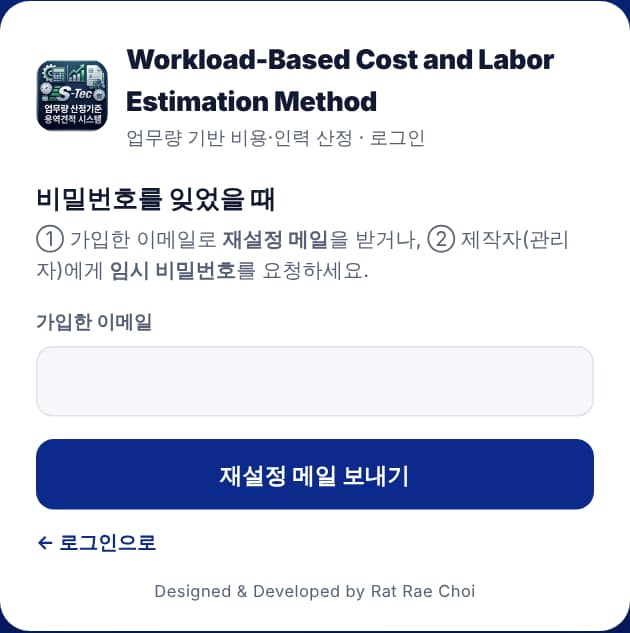
▲ 비밀번호 찾기 — 재설정 메일 받기 또는 임시 비밀번호 요청
- 로그인 창의 [비밀번호 찾기]를 누릅니다.
- 방법 ①: 가입한 이메일을 넣고 [재설정 메일 보내기]를 누릅니다. 메일함에 온 링크를 눌러 새 비밀번호를 정합니다.
- 방법 ②: 메일이 오지 않으면 제작자(관리자)에게 "임시 비밀번호를 주세요"라고 요청합니다.
💡 알아 두세요 메일이 안 보이면 스팸함(정크메일함)도 확인하세요. |
임시 비밀번호로 로그인했을 때
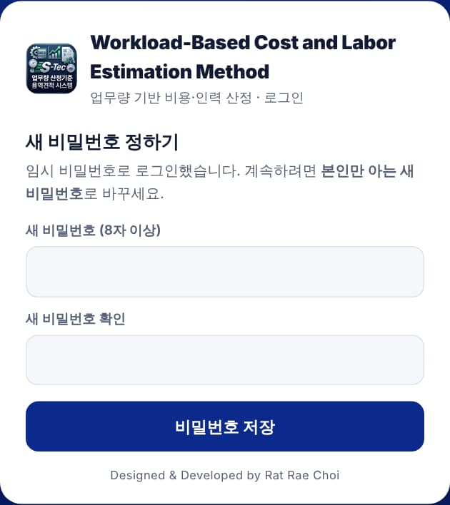
▲ 새 비밀번호 정하기 — 임시 비밀번호로 로그인하면 바로 나옵니다
- 제작자에게 받은 임시 비밀번호로 로그인합니다.
- "새 비밀번호 정하기" 화면이 나오면 본인만 아는 새 비밀번호(8자 이상)를 두 번 넣습니다.
- [비밀번호 저장]을 누르면 프로그램이 열립니다. 다음부터는 새 비밀번호로 로그인합니다.
휴대폰에서 로그인하기
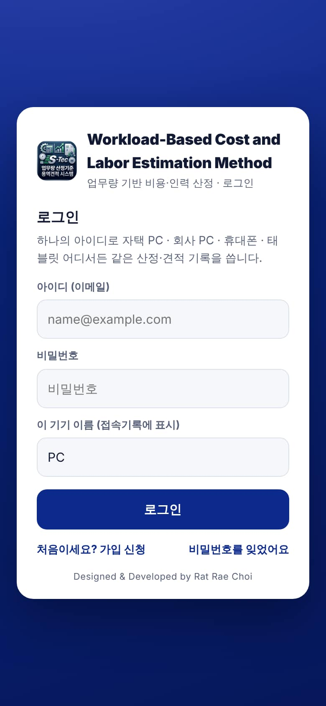
▲ 휴대폰 로그인 화면 — PC와 같은 이메일·비밀번호를 씁니다
- 휴대폰에서도 PC와 같은 이메일과 비밀번호로 로그인합니다. 새로 가입할 필요가 없습니다.
- [이 기기 이름]에는 "휴대폰"처럼 적어 두면 구분이 쉽습니다.
- 로그인하면 PC에서 하던 작업과 내 정보가 휴대폰에도 그대로 보입니다(6장 동기화).
4. 첫 화면 둘러보기
처음 열면 아래와 같은 화면이 나옵니다. 위에서부터 차례로 보세요.
전체 화면
▲ 첫 화면 — 위쪽 머리 부분, 가운데 소개 영상, 아래쪽 연도·방식·직종 선택
맨 위 머리 부분 (항상 보이는 곳)
▲ 머리 부분의 버튼들
- 왼쪽 앱 아이콘(업무량 산정기준 용역견적 시스템) — 누르면 언제든 처음 화면으로 돌아갑니다.
- [내 정보 등록] — 견적 담당자(나)의 이름·연락처·사진을 넣습니다. 엑셀 견적서에 자동으로 들어갑니다.
- [다운로드 QR] — 휴대폰으로 프로그램을 여는 QR 코드를 크게 보여 줍니다.
- [친구 추천] — 프로그램 주소를 카톡·문자·메일로 보냅니다.
- [내 계정] 카드 — 로그인한 내 이름이 보입니다. 누르면 내 계정 메뉴가 열립니다(6장).
- [주간 · 야간 · 시스템] — 화면 밝기 테마입니다. 밝은 곳은 주간, 어두운 곳은 야간, 시스템은 컴퓨터 설정을 따릅니다.
가운데 소개 영상
- 처음 열면 에스텍 인트로 영상이 나온 뒤, 이어서 영상 11편(0~10번)이 모자이크·페이드 같은 효과로 자연스럽게 넘어가며 차례로 재생됩니다.
- 영상 왼쪽 위의 작은 점(●) 12개가 영상 순서입니다. 길쭉한 초록 점이 지금 나오는 영상입니다.
- 보고 싶은 영상의 점을 누르면 그 영상으로 바로 넘어갑니다.
견적 연도와 방식 고르기
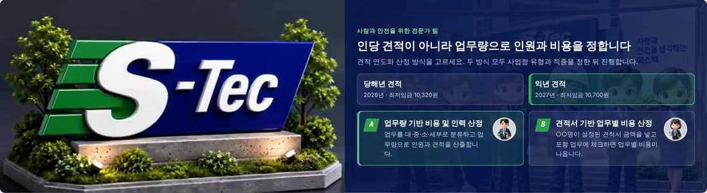
▲ 당해년/익년 견적, A/B 방식 선택
- [당해년 견적]은 올해(2026년) 최저임금, [익년 견적]은 내년(2027년) 최저임금으로 계산합니다.
- [A. 업무량 기반 비용 및 인력 산정] — 새로 견적을 낼 때 누릅니다.
- [B. 견적서 기반 업무별 비용 산정] — 이미 있는 견적서를 점검할 때 누릅니다.
사업장 유형과 직종 고르기
▲ ① 사업장 유형(공장·빌딩·병원…) ② 직종(보안·미화·주차·시설·기타)
- ① 사업장 유형: 공장, 빌딩, 병원, 유통, 대학교, 연수원, 발전소, 아파트, 기타 중 하나를 누릅니다.
- ② 직종: 보안, 미화, 주차, 시설, 기타 중 하나를 누릅니다. 고르면 그 직종에 맞는 업무표가 나옵니다.
- 직종 카드의 [+ 견적 추가]를 누르면 여러 직종을 한 견적서로 합칠 수 있습니다(혼합 견적, 10장 참고).
화면 메뉴 (왼쪽/위쪽 메뉴줄)
▲ A 방식 메뉴줄 — 왼쪽부터 차례로 누르며 진행합니다
- 메뉴는 왼쪽부터 순서대로 누르면 됩니다. 지금 보고 있는 메뉴는 진한 색으로 표시됩니다.
- 휴대폰에서는 메뉴가 위쪽에 한 줄로 나오며, 옆으로 밀어서 봅니다.
야간 테마 화면
▲ [야간]을 누르면 어두운 화면으로 바뀝니다
5. 처음 한 번만: 내 정보 등록
견적서에 들어갈 담당자 정보를 한 번만 넣어 두면, 이후 모든 엑셀 견적서에 자동으로 들어갑니다.
따라 하기
▲ 내 정보 등록 창
- 맨 위 [내 정보 등록]을 누릅니다.
- [사진 넣기]를 누르고 내 사진을 고릅니다. (선택 사항, 정사각형으로 자동으로 잘립니다)
- 이름(필수), 직책, 소속, 휴대폰, 사무실, 이메일을 적습니다.
- [저장]을 누릅니다. 머리 부분에 내 이름과 사진이 보이면 끝입니다.
💡 알아 두세요 로그인해서 쓰면 등록한 정보가 PC·휴대폰 모든 기기에 자동으로 맞춰집니다(6장). 로그인 없이 쓰면 지금 기기에만 저장되므로 다른 기기에서는 한 번 더 등록하세요. |
6. 내 계정 · 여러 기기에서 이어 쓰기
로그인해서 쓰면 머리 부분 오른쪽에 내 이름이 적힌 [내 계정] 카드가 생깁니다. 이 카드에서 내 정보와 비밀번호를 바꾸고, 다른 기기와 작업을 맞추고, 로그아웃합니다.
머리 부분의 [내 계정] 카드

▲ 로그인하면 친구 추천 오른쪽에 내 이름 카드가 생깁니다
- 카드에 내 이름, 역할(사용자), 마지막 동기화 시각이 보입니다.
- 카드를 누르면 내 계정 메뉴가 열립니다.
왼쪽 아래 「메인」 버튼
▲ 화면 왼쪽 아래의 「메인」 버튼
- 누르면 에스텍 운영 및 영업 통합관리 시스템(메인 프로그램) 첫 화면으로 갑니다.
- 메인 프로그램에서 근태관리 · 견적 · 사업장 지도 등 다른 에스텍 프로그램으로 옮겨 갈 수 있습니다. 같은 아이디라 다시 로그인하지 않아도 됩니다.
내 계정 메뉴 보기
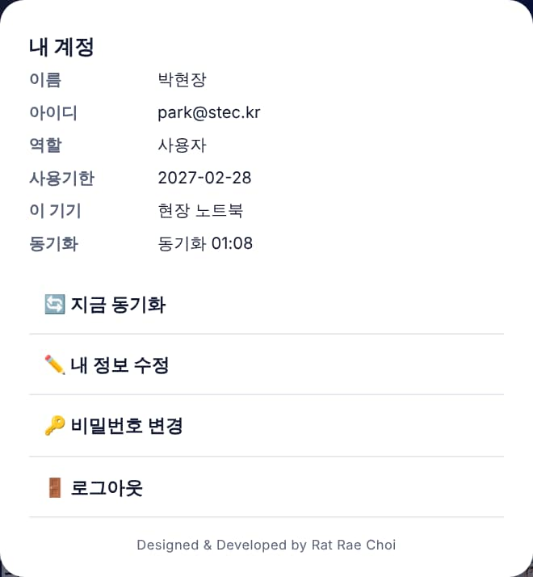
▲ 내 계정 메뉴 — 사용기한, 이 기기, 동기화 시각과 메뉴 버튼
- [사용기한] — 이 날짜까지 사용할 수 있습니다. 기한이 다가오면 제작자에게 연장을 요청하세요.
- [이 기기] — 로그인할 때 적은 기기 이름입니다.
- [지금 동기화] · [내 정보 수정] · [비밀번호 변경] · [로그아웃] 버튼이 있습니다.
💡 알아 두세요 일반 사용자 메뉴에는 [관리자 페이지]가 없습니다. 사용자 승인·차단은 제작자(관리자)만 합니다. |
여러 기기에서 이어 쓰기 · [지금 동기화]
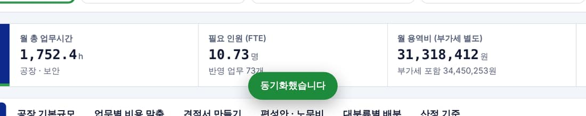
▲ [지금 동기화]를 누르면 "동기화했습니다"가 잠깐 나타납니다
- 같은 아이디로 로그인한 PC · 휴대폰 · 태블릿에 아래 내용이 자동으로 똑같이 맞춰집니다.
- 작성 중인 산정·견적 입력값, 견적 담당(내 정보 등록, 사진 포함), 화면 테마(주간·야간).
- 보통은 저절로 맞춰집니다. 다른 기기에서 막 고친 내용이 안 보이면 [지금 동기화]를 누르세요.
⚠ 주의 두 기기에서 같은 견적을 동시에 고치면 나중에 저장한 쪽으로 맞춰집니다. 한 번에 한 기기에서 작업하세요. |
내 정보 수정

▲ 내 정보 수정 — 이름, 소속·부서, 연락처, 이 기기 이름
- [내 계정] 카드 → [내 정보 수정]을 누릅니다.
- 바뀐 이름·소속·연락처나 이 기기 이름을 고칩니다.
- [저장]을 누릅니다.
💡 알아 두세요 여기는 로그인 계정 정보입니다. 엑셀 견적서에 들어가는 담당자 정보는 [내 정보 등록](5장)에서 따로 고칩니다. |
비밀번호 변경
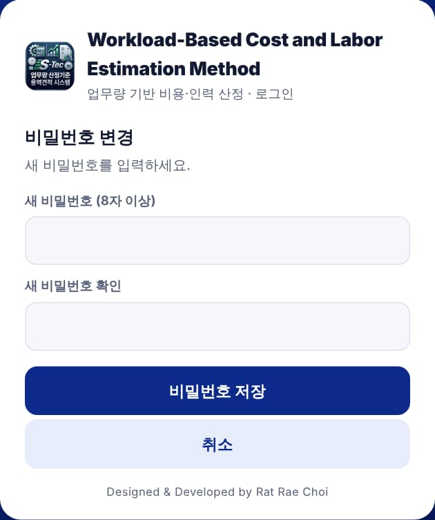
▲ 비밀번호 변경 — 새 비밀번호를 두 번 넣습니다
- [내 계정] 카드 → [비밀번호 변경]을 누릅니다.
- 새 비밀번호(8자 이상)를 두 번 똑같이 넣습니다.
- [비밀번호 저장]을 누릅니다. 다른 기기도 다음 로그인부터 새 비밀번호를 씁니다.
"이 기기는 조회 전용입니다"가 보여요
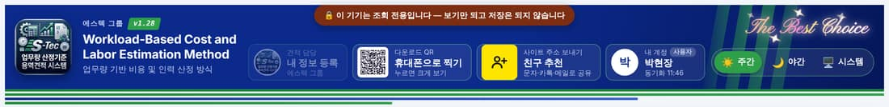
▲ 조회 전용 기기 — 위쪽에 갈색 안내 띠가 나오고 저장·등록 버튼이 흐리게 잠깁니다
- 제작자가 이 기기를 "보기만 하는 기기"로 정해 둔 것입니다. 화면은 다 볼 수 있지만 저장 · 삭제 · 등록은 되지 않습니다.
- 저장이 필요하면 회사 PC 등 다른 기기를 쓰거나, 제작자에게 이 기기 권한을 바꿔 달라고 하세요.
로그아웃
- [내 계정] 카드 → [로그아웃]을 누르면 로그인 화면으로 돌아갑니다.
- 같이 쓰는 컴퓨터, 남의 휴대폰에서 썼다면 꼭 로그아웃하세요.
- 로그아웃해도 서버에 동기화된 작업은 지워지지 않습니다. 다시 로그인하면 그대로 이어집니다.
이런 화면이 나오면 · 사용기한 만료
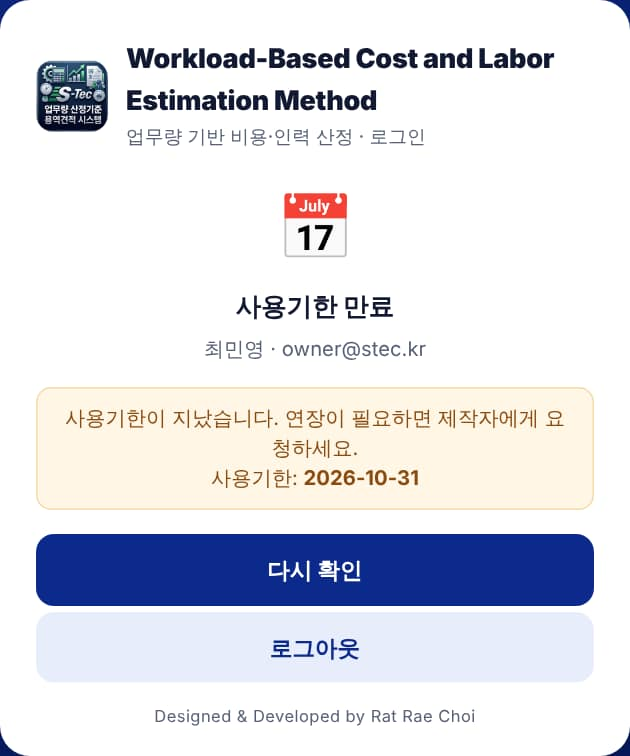
▲ 사용기한 만료 — 제작자에게 연장을 요청하세요
- 사용기한이 지나면 이 화면이 나옵니다. 제작자에게 연장을 요청하세요.
- 연장되었다는 연락을 받으면 [다시 확인]을 누릅니다.
이런 화면이 나오면 · 프로그램 점검 중
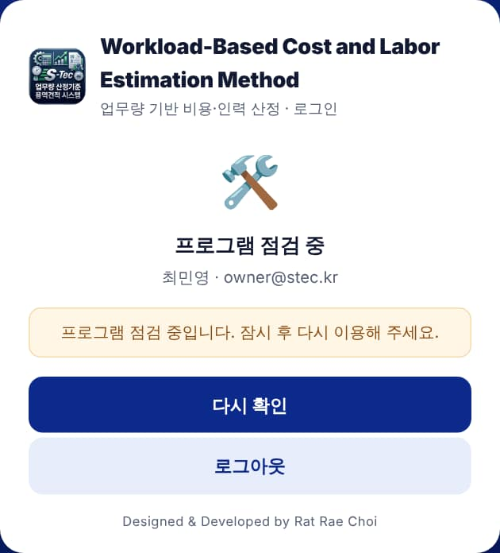
▲ 점검 중 — 제작자가 점검 모드를 켠 상태입니다
- 제작자가 프로그램을 손보는 중입니다. 화면의 안내 문구를 읽고 잠시 뒤 [다시 확인]을 누르세요.
이런 화면이 나오면 · 이 기기는 사용 제한
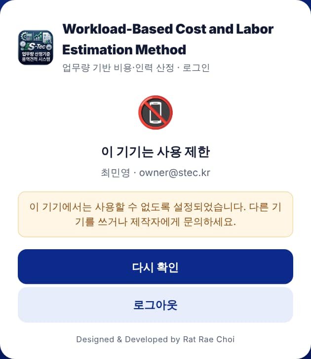
▲ 이 기기는 사용 제한 — 다른 기기를 쓰거나 제작자에게 문의
- 이 기기에서는 쓸 수 없게 막혀 있습니다. 회사 PC 등 다른 기기를 쓰거나 제작자에게 문의하세요.
- "사용이 중지된 계정"이 나오면 계정 자체가 차단된 것이니 제작자에게 문의하세요.
💡 알아 두세요 인터넷이 잠깐 끊겨도 마지막 로그인 후 24시간 동안은 그대로 쓸 수 있습니다. 그 뒤로는 인터넷에 연결해야 다시 열립니다. |
7. A 방식 따라 하기 — 새 견적 만들기
업무량으로 인원과 견적을 계산하고 엑셀 견적서를 만드는 방법입니다. 메뉴를 왼쪽부터 차례로 누르면 됩니다. 처음에는 예시 값이 들어 있으니, 그대로 눌러 보며 익혀도 됩니다.
1단계 · 견적 사업장 정하기
▲ 견적 사업장 화면 — 사업장 이름을 넣고 지도에서 위치 확인
- 메뉴에서 [견적 사업장]을 누릅니다.
- [신규 영업 사업장](새 고객) 또는 [기존 에스텍 그룹 사업장](이미 운영 중) 탭을 고릅니다.
- [사업장 명칭] 칸에 이름을 적습니다. 예: 현대자동차 울산공장
- [인터넷에서 위치·현황 조회]를 누르면 지도에 위치가 표시되고, 가까운 에스텍 사업장·지사가 오른쪽에 나옵니다.
- 위치가 안 맞으면 [지도에서 위치 직접 지정]을 누르고 지도를 눌러 정합니다. [내 위치]는 지금 내가 있는 곳을 보여 줍니다.
💡 알아 두세요 여기서 정한 이름과 주소가 견적서의 "수신"과 "사업장 주소" 칸에 자동으로 들어갑니다. |
2단계 · 업무 분류표 확인하기
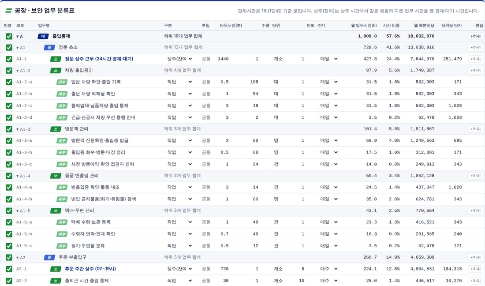
▲ 업무 분류표 — 체크한 업무만 계산에 들어갑니다
- 메뉴에서 [○○ · ○○ 업무 분류표]를 누릅니다. (예: 공장 · 보안 업무 분류표)
- 맨 왼쪽 [반영] 체크 칸: 이 사업장에서 하는 업무만 체크합니다. 체크를 풀면 계산에서 빠집니다(지워지지 않음).
- [단위시간(분)]: 그 일을 한 번 하는 데 걸리는 분, [수량]: 한 번에 하는 개수, [빈도·주기]: 하루/매주/매월 몇 번 하는지 적습니다.
- 오른쪽 [월 업무시간]과 [월 배분비용]이 자동으로 바뀝니다.
- 새 업무가 필요하면 [+ 대분류 추가] 또는 각 줄의 [+하위]를 누릅니다.
💡 알아 두세요 대분류(A, B…) → 중분류(A1) → 소분류(A1-1) → 세부(A1-1-a) 순서로 나뉩니다. [중분류까지만 보기]를 누르면 표가 짧아져 보기 쉽습니다. |
⚠ 주의 잘못 고쳤으면 [↺ 처음 분류표로 리셋]을 두 번 누르면 처음 상태로 돌아갑니다. |
화면 아래 결과 띠 보는 법
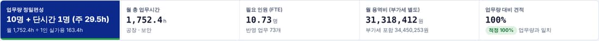
▲ 업무량 정밀편성 결과 띠
- [업무량 정밀편성]: 업무량을 하려면 필요한 인원 구성 (예: 10명 + 단시간 1명)
- [월 총 업무시간]: 체크한 모든 업무를 한 달 동안 하는 데 드는 시간
- [필요 인원 (FTE)]: 전일제 1명 기준으로 환산한 인원 (예: 10.73명)
- [월 용역비 (부가세 별도)]: 업무량으로 계산한 한 달 견적 금액
- [업무량 대비 견적]: 100%면 딱 맞음(적정), 100%를 넘으면 과부하입니다.
3단계 · 기본규모 넣기
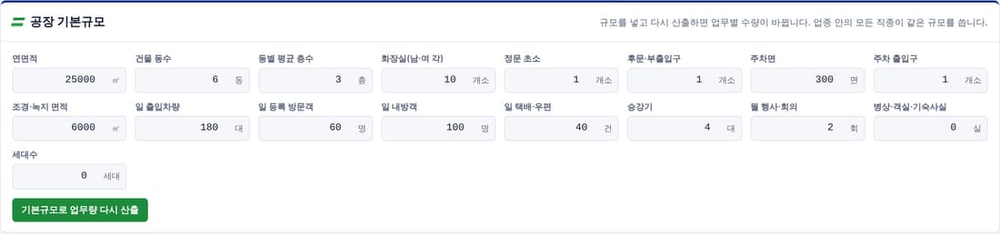
▲ 기본규모 — 연면적, 건물 동수, 화장실, 주차면, 출입차량 등
- 메뉴에서 [○○ 기본규모]를 누릅니다.
- 연면적(㎡), 건물 동수, 층수, 화장실 수, 정문 초소, 주차면, 일 출입차량, 일 방문객, 일 택배 건수 같은 사업장 크기를 적습니다. (사업장 유형별 예시 값이 처음부터 들어 있습니다)
- [기본규모로 업무량 다시 산출]을 누르고, 확인 문구가 나오면 한 번 더 누릅니다.
- 업무 분류표의 수량이 규모에 맞게 자동으로 바뀝니다.
4단계 · 업무별 비용 맞춤
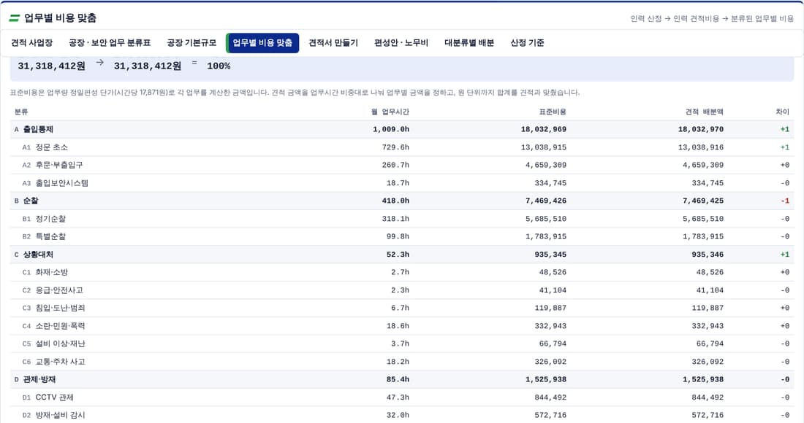
▲ 업무별 비용 맞춤 — 인원 견적비가 업무마다 얼마씩 나뉘는지
- 계산된 인원의 견적 비용을 업무마다 나눠 보여 줍니다.
- [표준비용]은 업무량으로 계산한 값, [견적 배분액]은 실제 견적 금액을 나눈 값입니다. [차이]가 0에 가까우면 잘 맞는 것입니다.
- 여기서는 따로 고칠 것이 없습니다. 확인만 하고 넘어갑니다.
5단계 · 견적서 만들기 (엑셀 내보내기)
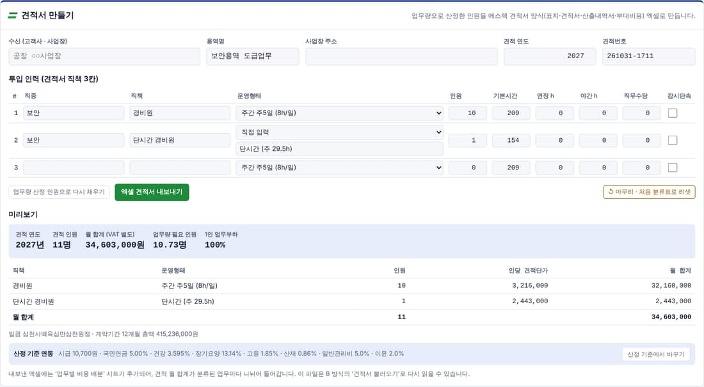
▲ 견적서 만들기 — 내용 확인 후 [엑셀 견적서 내보내기]
- 메뉴에서 [견적서 만들기]를 누릅니다.
- 위쪽 칸(수신, 용역명, 사업장 주소, 견적 연도, 견적번호)이 맞는지 봅니다. 1단계에서 정한 내용이 이미 들어 있습니다.
- [투입 인력] 표: 직종·직책·운영형태·인원·기본시간·연장·야간·직무수당이 업무량대로 채워져 있습니다. 필요하면 직접 고칩니다.
- [운영형태]를 바꾸면(예: 주간 주5일 8h, 3조2교대 12h) 기본시간이 맞게 바뀝니다. 감시단속 근무면 오른쪽 체크를 켭니다.
- [미리보기]에서 인원과 월 합계를 확인합니다.
- [엑셀 견적서 내보내기]를 누르면 엑셀 파일이 저장됩니다(보통 "다운로드" 폴더).
💡 알아 두세요 인원을 고쳤다가 처음 계산으로 되돌리려면 [업무량 산정 인원으로 다시 채우기]를 누르세요. |
⚠ 주의 모두 끝나면 [↺ 마무리 · 처음 분류표로 리셋]을 눌러 다음 견적을 깨끗하게 시작할 수 있습니다. |
6단계 · 편성안 · 노무비 비교
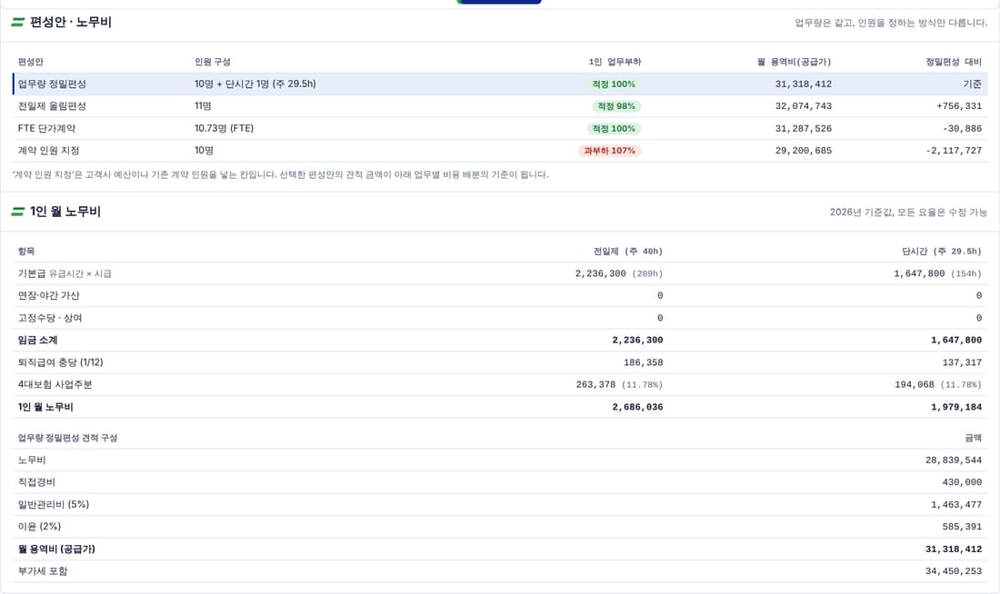
▲ 편성안 · 노무비 — 인원 구성 방법별 비교
- 같은 업무량을 [업무량 정밀편성], [전일제 올림편성], [FTE 단기계약], [계약 인원 지정] 4가지 방법으로 편성한 결과를 비교합니다.
- [적정 100%]는 딱 맞음, [과부하 107%]처럼 100%를 넘으면 사람이 부족하다는 뜻입니다.
- 아래 [1인 월 노무비]에서 기본급·4대보험·퇴직금 등 한 사람 비용 내역을 볼 수 있습니다.
7단계 · 대분류별 배분
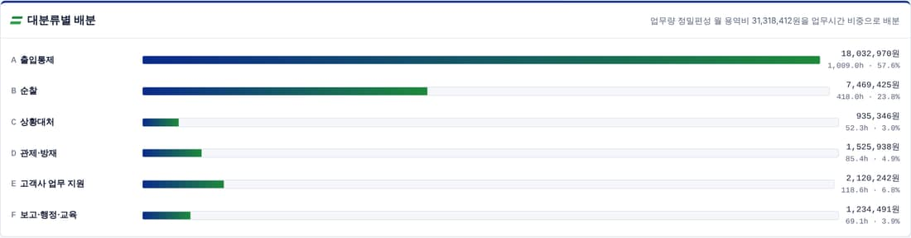
▲ 대분류별 배분 — 큰 업무 묶음별 비용 비중
- 출입통제, 순찰, 상황대처처럼 큰 묶음별로 비용이 몇 %인지 보여 줍니다. 고객에게 설명할 때 좋습니다.
8단계 · 산정 기준 (필요할 때만)
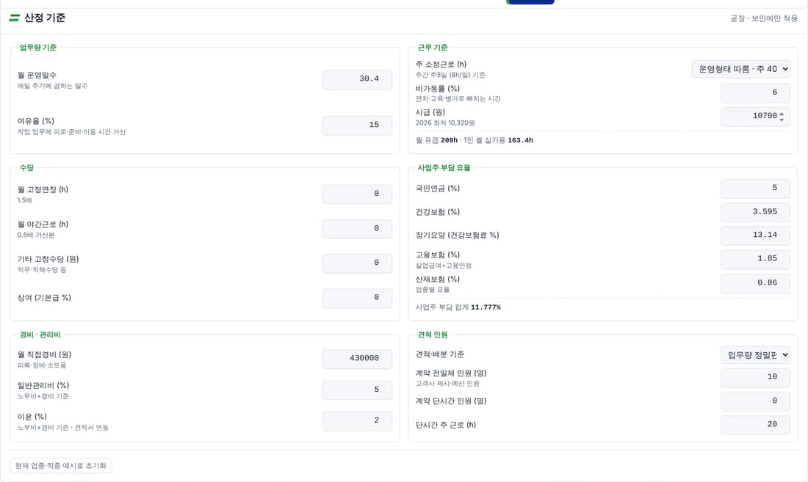
▲ 산정 기준 — 시급, 4대보험 요율, 관리비·이윤
- 시급, 월 운영일수, 여유율, 4대보험 요율, 일반관리비·이윤 같은 계산 기준입니다. 보통은 그대로 둡니다.
- [주 소정근로(h)]는 운영형태에 따라 자동으로 정해지고, 필요하면 직접 고를 수 있습니다.
- 값을 바꾸면 모든 결과와 견적 금액이 바로 다시 계산됩니다.
- 잘못 바꿨으면 [현재 업종·직종 예시로 초기화]를 누릅니다.
8. B 방식 따라 하기 — 받은 견적서 점검하기
이미 있는 에스텍 견적서(엑셀)를 불러와, 그 인원으로 업무를 다 할 수 있는지 확인합니다. 결과로 ① 과부하가 표시된 견적서, ② 모자라는 인원을 더한 견적서 두 가지를 만들 수 있습니다. 메뉴는 5개입니다.
B 방식 메뉴 (5단계)
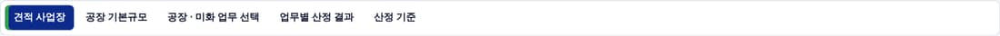
▲ 1. 견적 사업장 → 2. 기본규모 → 3. 업무 선택 → 4. 업무별 산정 결과 → 5. 산정 기준
1단계 · 견적 사업장 (견적서 불러오기)
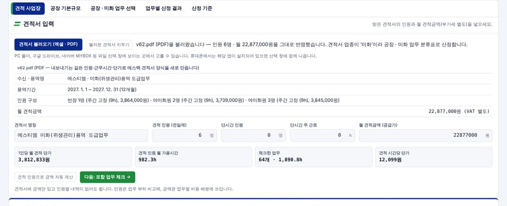
▲ 견적서(엑셀 또는 PDF)를 불러오면 수신·용역명·인원·월 금액·사업장 주소가 자동으로 채워집니다
- 처음 화면에서 [B. 견적서 기반 업무별 비용 산정]을 누릅니다.
- 메뉴 [견적 사업장]에서 [견적서 불러오기 (엑셀 · PDF)]를 누릅니다.
- 파일 선택 창에서 견적서 엑셀 파일(.xlsx) 또는 PDF 파일을 고릅니다. (PC 폴더, 구글 드라이브, 네이버 MYBOX 모두 가능)
- "인원 ○명 · 월 ○원을 그대로 반영했습니다"라는 문구가 나오면 성공입니다.
- 견적서의 직종(보안·미화·주차·시설·기타)을 읽어서 그 직종의 업무표로 자동으로 바꿉니다. 예: 미화 견적서 → 미화 업무표.
💡 알아 두세요 PDF는 에스텍 견적서를 PDF로 저장한 파일이면 됩니다. 산출내역서 쪽까지 들어 있으면 근무시간도 정확히 읽습니다. 스캔(사진)한 PDF는 읽을 수 없으니 엑셀을 쓰거나 인원과 월 견적금액(부가세 별도)을 직접 적으세요. |
2단계 · 기본규모
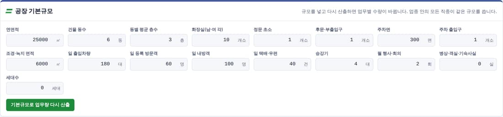
▲ 사업장 크기를 넣고 [기본규모로 업무량 다시 산출]
- 연면적, 건물 동수, 화장실, 주차면, 출입차량 등 사업장 크기를 적습니다.
- [기본규모로 업무량 다시 산출]을 두 번 누릅니다.
3단계 · 업무 선택
▲ 견적서에 포함된 업무에 체크
- 견적서 계약에 들어 있는 업무만 체크합니다.
- 대분류를 체크하면 그 아래 업무가 한꺼번에 체크됩니다.
- [전체 선택] / [전체 해제] 버튼으로 한 번에 바꿀 수 있습니다.
- 위쪽에 "체크 ○개 업무 · ○○h / 월" 처럼 업무시간 합계가 바로 나옵니다.
4단계 · 업무별 산정 결과 (엑셀 내보내기)
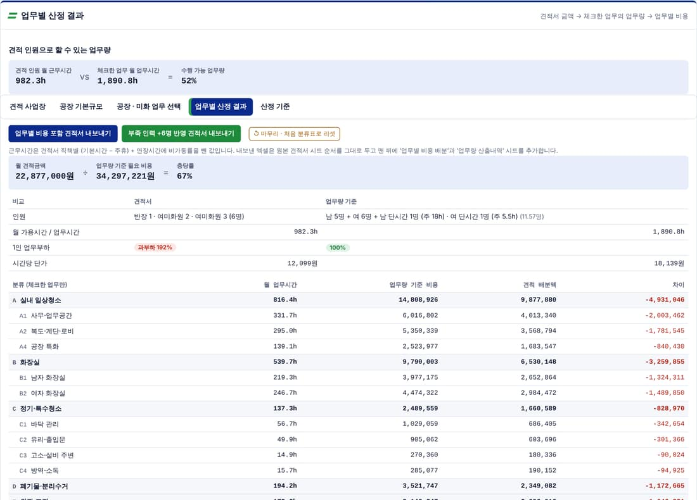
▲ 견적 인원으로 할 수 있는 업무량 — 52%면 업무의 절반 정도만 할 수 있다는 뜻
- [견적 인원 월 근무시간] vs [체크한 업무 월 업무시간]을 비교해 [수행 가능 업무량]을 보여 줍니다.
- 100%보다 작으면 사람이 모자란 것(과부하)이고, 빨간 안내 문구에 "○○ +○명"이 필요하다고 나옵니다.
- [업무별 비용 포함 견적서 내보내기] — 원래 견적서 숫자는 그대로 두고 과부하를 빨간색으로 표시한 파일을 만듭니다.
- [부족 인력 +○명 반영 견적서 내보내기] — 모자라는 인원을 더해 다시 계산한 견적서를 만듭니다.
💡 알아 두세요 두 파일 모두 원래 견적서의 시트 순서를 그대로 두고, 뒤에 검토 시트와 업무별 비용 시트를 덧붙입니다. |
5단계 · 산정 기준
▲ 산정 기준 — A 방식과 같습니다
- 시급·요율·관리비를 바꿀 때만 씁니다. 보통은 그대로 둡니다.
9. 엑셀 결과 파일 보는 법
만든 엑셀 파일은 에스텍 견적서 양식 그대로입니다. 아래 표시를 보면 무엇이 중요한지 바로 알 수 있습니다.
표지
▲ 표지 — 수신, 용역명, 견적금액, 담당자. B 방식 파일은 아래에 "업무량 과부하" 줄이 추가됩니다
과부하 표시 (업무별 비용 파일)
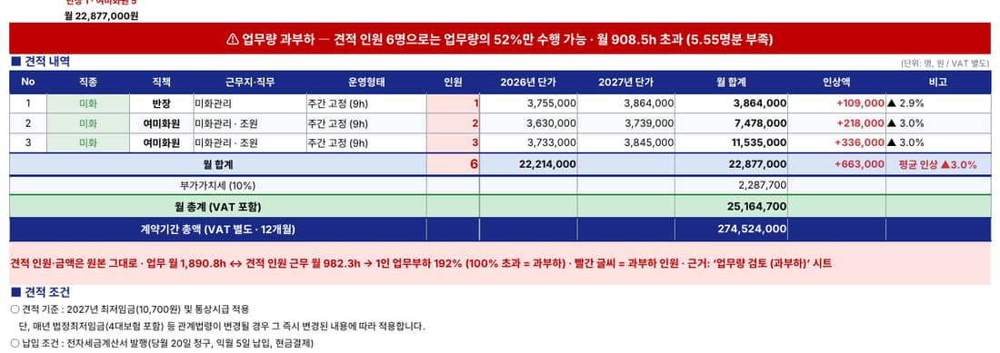
▲ 빨간 띠와 빨간 글씨 = 견적 인원에 비해 업무가 많다(과부하)
- 견적서 가운데 빨간 띠: "⚠ 업무량 과부하 — 견적 인원 6명으로는 업무량의 52%만 수행 가능"
- 인원 칸이 빨간 굵은 글씨로 표시됩니다.
- 표 아래 연한 빨간 줄에 근거(업무시간, 근무시간, 1인 업무부하 %)가 적혀 있습니다.
- 견적 금액과 인원은 원래 견적서와 똑같습니다. 표시만 덧붙입니다.
추가 인력 표시 (부족인력 반영 파일)
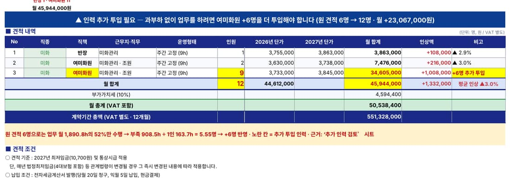
▲ 파란 띠 + 노란 칸 = 과부하 없이 일하려면 더 넣어야 하는 인원
- 파란 띠: "▲ 인력 추가 투입 필요 — 여미화원 +6명을 더 투입해야 합니다 (6명 → 12명)"
- 늘어난 인원·금액 칸은 노란 바탕에 빨간 굵은 글씨, 비고에 "+6명 추가 투입"이 적힙니다.
- 월 합계와 계약기간 총액도 늘어난 인원으로 다시 계산됩니다.
산출내역서
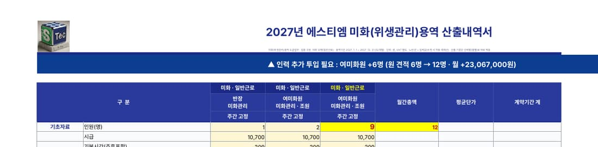
▲ 산출내역서 — 맨 위 띠와 인원 칸 강조, 열마다 "미화 · 일반근로" 같은 업종 구분
- 제목에 사업장명과 용역 이름이, 설명 줄에 "업종 구분: 미화 6명(일반근로)"처럼 업종별 인원이 나옵니다.
- 인원이 늘어난 열은 노란 칸으로 표시됩니다.
검토 시트 (업무량 검토 / 추가 인력 검토)
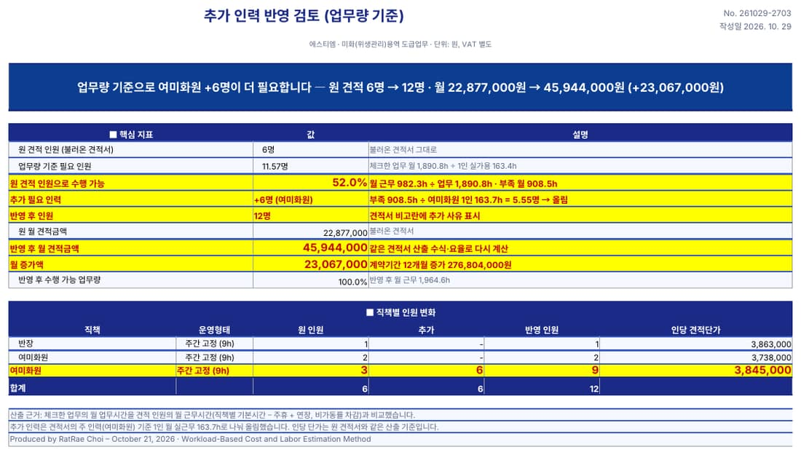
▲ 추가 인력 검토 시트 — 핵심 지표와 직책별 인원 변화
- 맨 위 띠에 결론 한 줄, 아래에 핵심 지표(수행 가능 업무량, 과부하 시간, 추가 필요 인력, 월 증가액)가 있습니다.
- 중요한 줄은 색 바탕에 빨간 굵은 글씨로 표시됩니다.
업무별 비용 배분 · 업무량 산출내역
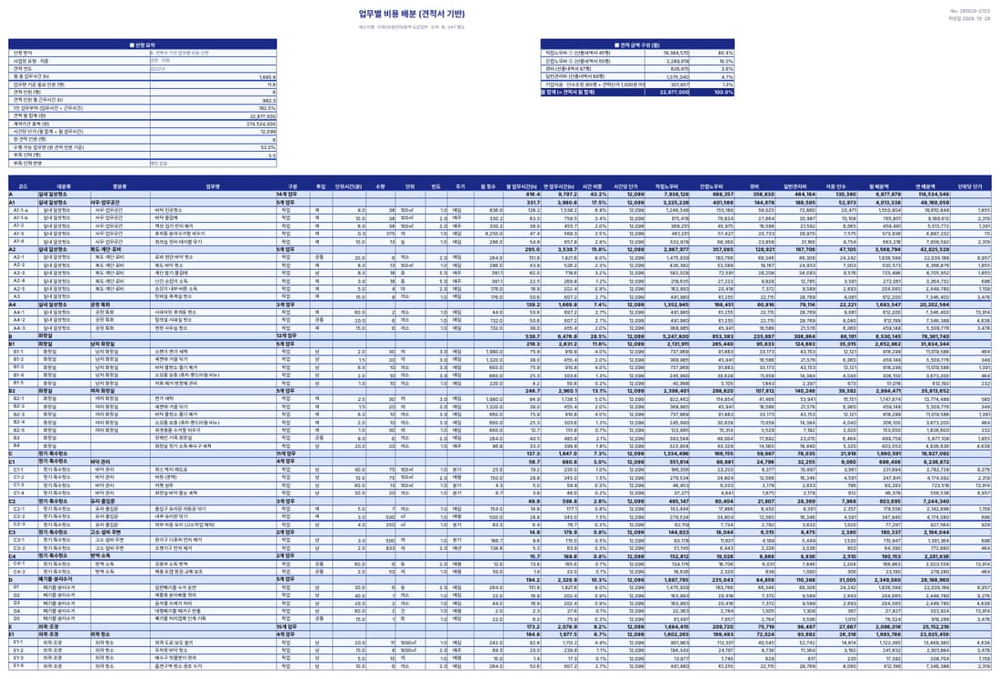
▲ 업무별 비용 배분 — 업무마다 시간과 비용
- [업무별 비용 배분]: 견적 금액이 각 업무에 얼마씩 나뉘는지 보여 줍니다.
- [업무량 산출내역]: 업무마다 단위시간 × 수량 × 빈도로 월 시간을 계산한 근거입니다.
10. 한 사업장에 여러 직종 견적 (혼합 견적)
예를 들어 보안과 미화를 한 사업장에 함께 견적 낼 때 씁니다.
따라 하기
- 처음 화면 ② 직종에서 보안 카드의 [+ 견적 추가], 미화 카드의 [+ 견적 추가]를 차례로 누릅니다. (✓ 견적 포함으로 바뀝니다)
- 직종 카드를 하나씩 눌러 그 직종의 업무 분류표를 확인·수정합니다.
- [견적서 만들기]에 가면 위쪽에 "혼합 견적" 상자가 나오고 직종별 인원·금액이 보입니다.
- [엑셀 견적서 내보내기]를 누르면 "2. 종합 견적서"와 직종별 "3-1. 견적서(보안)", "4-1. 견적서(미화)" 시트가 한 파일로 만들어집니다.
💡 알아 두세요 다시 한 직종만 견적 내려면 [✓ 견적 포함]을 한 번 더 눌러 빼면 됩니다. |
11. 자주 묻는 질문 · 문제 해결
이럴 때 | 이렇게 하세요 |
|---|---|
Q. 엑셀 파일이 어디에 저장됐는지 모르겠어요 | PC는 보통 "다운로드" 폴더에 저장됩니다. 인터넷 창 오른쪽 위 다운로드 아이콘(↓)을 눌러도 찾을 수 있습니다. 휴대폰은 "파일" 앱의 다운로드 폴더를 보세요. |
Q. "에스텍 견적서 양식이 아닙니다"라고 나와요 | 견적서 · 산출내역서 시트가 있는 에스텍 양식 엑셀만 불러올 수 있습니다. 다른 회사 양식이면 금액과 인원을 직접 입력하세요. |
Q. "혼합 견적서입니다"라고 나와요 | B 방식은 직종 하나짜리 견적서만 불러옵니다. 여러 직종 견적서는 A 방식에서 직종별로 고쳐 다시 내보내세요. |
Q. 숫자를 잘못 고쳐서 엉망이 됐어요 | 업무 분류표의 [↺ 처음 분류표로 리셋], 산정 기준의 [현재 업종·직종 예시로 초기화]를 누르면 처음 값으로 돌아갑니다. |
Q. 지도가 안 나와요 | 인터넷이 연결되어 있는지 확인하세요. 회사 보안 때문에 지도가 막히면 사업장 명칭과 주소만 적어도 견적서는 만들어집니다. |
Q. 다른 컴퓨터에서 하던 작업을 이어서 하고 싶어요 | 로그인해서 쓰면 같은 아이디로 로그인한 기기끼리 자동으로 맞춰집니다. 안 보이면 [내 계정] → [지금 동기화]. 로그인 없이 쓰면 만든 엑셀 견적서를 옮긴 뒤 B 방식 [견적서 불러오기]로 다시 읽으세요. |
Q. 새 버전이 나왔다는 안내가 떠요 | 웹과 크롬에 설치한 앱은 자동으로 새로 고쳐집니다. 그래도 안내가 계속 보이면 창을 닫았다가 다시 여세요. |
Q. 과부하 %는 어떻게 계산하나요 | 1인 업무부하 = 체크한 업무 월 시간 ÷ 견적 인원 월 근무시간. 근무시간은 (기본시간 − 주휴) + 연장시간에서 비가동률을 뺀 값입니다. 100%를 넘으면 과부하입니다. |
Q. PDF 견적서도 불러올 수 있나요? | 네. [견적서 불러오기 (엑셀 · PDF)]에서 PDF를 고르면 됩니다. 에스텍 견적서를 PDF로 저장한 파일이어야 하고, 스캔(사진)한 PDF는 읽지 못합니다. PDF로 불러온 견적서도 엑셀로 내보낼 수 있습니다. |
Q. 다른 에스텍 프로그램으로 가고 싶어요 | 화면 왼쪽 아래 「메인」 버튼을 누르면 메인 프로그램으로 갑니다. 같은 아이디라 다시 로그인하지 않아도 됩니다. |
Q. "새 기기 승인 대기" 또는 "사용 권한이 없습니다"가 나와요 | 제작자(관리자)가 승인하거나 권한을 줘야 합니다. 연락한 뒤 승인됐다는 말을 들으면 [다시 확인]을 누르세요. |
Q. 로그인 창에서 "승인 대기 중"만 나와요 | 제작자(관리자)가 아직 승인하지 않았습니다. 승인을 요청하고, 승인 연락을 받으면 [다시 확인]을 누르세요. |
Q. 비밀번호를 잊어버렸어요 | 로그인 창 [비밀번호 찾기] → 재설정 메일을 받거나, 제작자에게 임시 비밀번호를 요청하세요. 임시 비밀번호로 로그인하면 새 비밀번호를 바로 정합니다. |
Q. 휴대폰을 바꿨어요 / 잃어버렸어요 | 새 휴대폰에서 같은 이메일로 로그인하면 작업이 그대로 이어집니다. 잃어버린 휴대폰은 제작자에게 알려 그 기기를 차단해 달라고 하세요. |
12. 꼭 알아 둘 낱말
낱말 | 뜻 |
|---|---|
업무량 | 해야 할 일을 시간으로 바꾼 양. 단위시간(분) × 수량 × 빈도로 계산합니다. |
정밀편성 | 업무량에 딱 맞게 전일제 + 단시간 인원을 섞어 정하는 방법 |
FTE | 전일제 1명 기준으로 환산한 인원 수 (예: 10.73명) |
과부하 | 견적 인원이 할 수 있는 시간보다 업무가 더 많은 상태 (100% 초과) |
감시단속 | 경비처럼 대기 시간이 많은 근무 형태. 연장근로 계산 방식이 다릅니다. |
당해년 · 익년 | 올해 · 내년. 해마다 최저임금이 달라 견적 금액이 바뀝니다. |
운영형태 | 근무 방식 (예: 주간 주5일 8h, 3조2교대 (12h 교대), 단시간 주 29.5h) |
부대비용 | 피복·장비·복리후생 같은 인건비 외 비용. 인원에게 똑같이 나눠 넣습니다. |
동기화 | 같은 아이디로 로그인한 여러 기기의 작업 내용을 똑같이 맞추는 것 |
사용기한 | 제작자가 정해 준, 프로그램을 쓸 수 있는 마지막 날짜 |
Produced by RatRae Choi – October 21, 2026